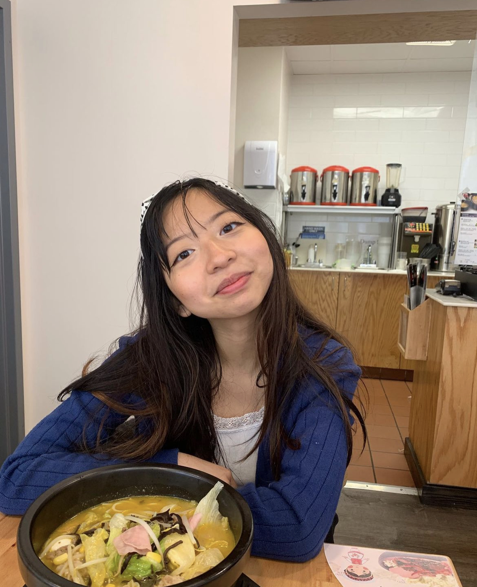

Yumiko Chow (She/Her) is an incredibly talented artist who pours her heart and soul into painting portraits and capturing the spirit of animals, while also dedicating herself to art advocacy work. She is currently attending Northeastern University ('27) and studying Computer Science & Design. Yumiko's dedication to her craft and her genuine affection for both human and animal subjects shine through in every masterpiece she creates, leaving viewers captivated by the sheer artistry and heartfelt connection portrayed in her work.
